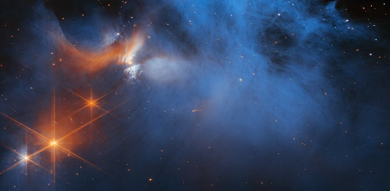
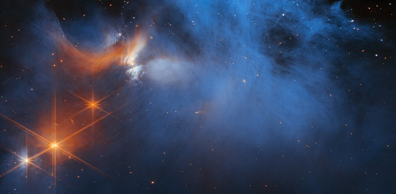

Про телескоп Вебба
Справа зображений американський орбітальний інфрачервоний космічний телескоп (англ. James Webb Space Telescope, JWST). Він призначений для широкого спектра спостережень в астрономії і космології, зокрема, спостереження найвіддаленіших об'єктів і подій у Всесвіті, як-от утворення перших галактик.
Розробка і керування телескопом здійснюється шляхом міжнародної співпраці 17 країн, на чолі з НАСА, зі значним внеском Європейського та Канадського космічних агенств. Цей телескоп є наступником Хаббла як головної місії НАСА в астрофізиці. На момент запуску телескоп Вебба був найбільшим, найдорожчим та найчутливішим оптичним та інфрачервоним космічним телескопом в історії людства.
Клікни на відео, щоб зупинити чи почати відтворення
Початок покладено
У вересні 1989 року Науковий інститут космічного телескопа (STScI) і NASA спільно провели в STScI Семінар космічного телескопа наступного покоління, який зібрав понад 130 астрономів та інженерів. Група запропонувала NASA дослідити можливість використання 10-метрового телескопа ближнього інфрачервоного діапазону з пасивним охолодженням на високій навколоземній орбіті або 16-метрового телескопа на Місяці для вивчення галактик із великим червоним зміщенням.
У 1996 році комітет із 18 членів на чолі з астрономом Аланом Дреслером офіційно рекомендував NASA розробити космічний телескоп, який би спостерігав небо в інфрачервоному світлі — діапазоні довжин хвиль, який дозволяє астрономам бачити крізь пилові та газові хмари та поширює зір людства далі у простір і назад у часі. Він матиме дзеркало діаметром більше чотирьох метрів і працюватиме на орбіті далеко за межами супутника Землі.
Три команди, що складаються з науковців та інженерів з приватного та державного секторів, зустрілися, щоб визначити, чи зможе NASA реалізувати бачення комітету. Усі троє дійшли висновку, що запропонований телескоп працюватиме. У 1997 році NASA погодилося профінансувати додаткові дослідження, щоб уточнити технічні та фінансові вимоги до будівництва телескопа. До 2002 року агентство вибрало команди для створення інструментів і групу астрономів, які забезпечать керівництво будівництвом. Також у 2002 році телескоп був офіційно названий космічним телескопом Джеймса Вебба на честь адміністратора NASA , який керував розробкою програми «Аполлон».
Галерея


 
